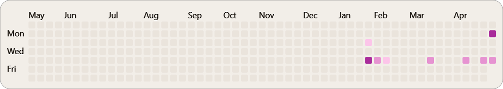

Projects
Github Activities

If you think it would be useful or interesting to collaborate, you can contact me to discuss a project.
Contact me >
If you think it would be useful or interesting to collaborate, you can contact me to discuss a project.
Contact me >